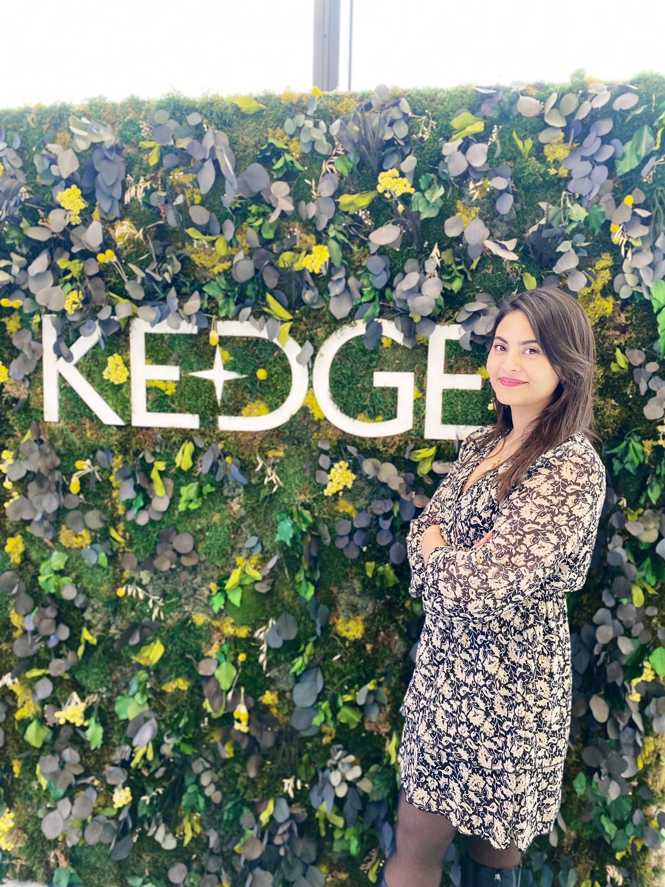

Bonjour, je suis Widad 😎

Étudiante à KEDGE Business School en Master spécialisé en Marketing Digital et Data. Passionnée par les données et les stratégies numériques innovantes.
Contactez-moi sur LinkedIn
Marketing Digital 💻
Passionnée par l'analyse des tendances et la mise en œuvre de stratégies de marketing numérique efficaces.
- Élaboration de campagnes sur les différents canaux digitaux.
- Évaluation des metrics et optimisation SEO/SEA.
- Création de contenu engageant pour les réseaux sociaux.
- Analyse de données pour améliorer l'expérience utilisateur.
Analyses de Données 📊
Engagée dans la transformation des données complexes en insights marketing pertinents.
- Utilisation d'outils d'analyse de données avancés.
- Interprétation et visualisation de données pour une prise de décision éclairée.
- Création de modèles prédictifs pour anticiper les tendances du marché.
- Approches quantitatives pour le suivi de la performance des ventes.
Innovation & Créativité 🚀
Curieuse et créative, j'explore constamment de nouvelles approches pour résoudre des défis marketing uniques.
- Recherche de solutions innovantes en marketing et publicité.
- Adoption de pratiques créatives pour le storytelling de marque.
- Expérimentation avec les dernières technologies marketing.
- Approche centrée sur l'utilisateur pour la conception de produits digitaux.